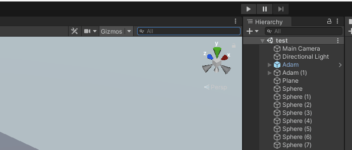
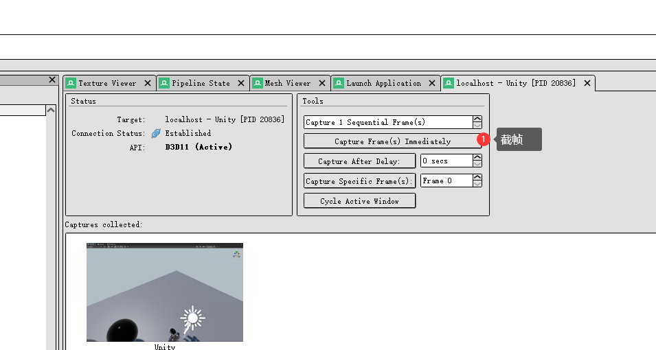
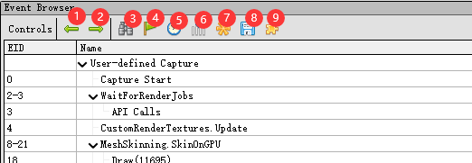
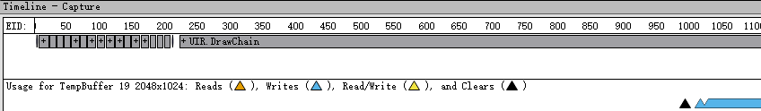
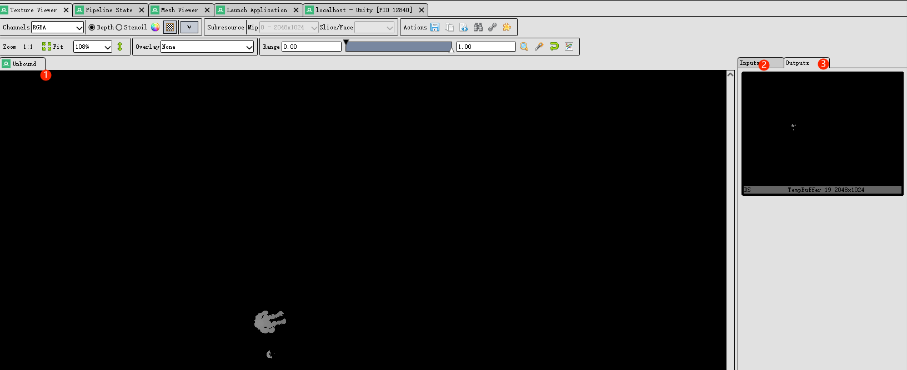
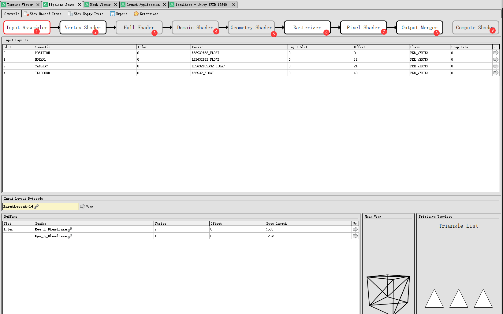
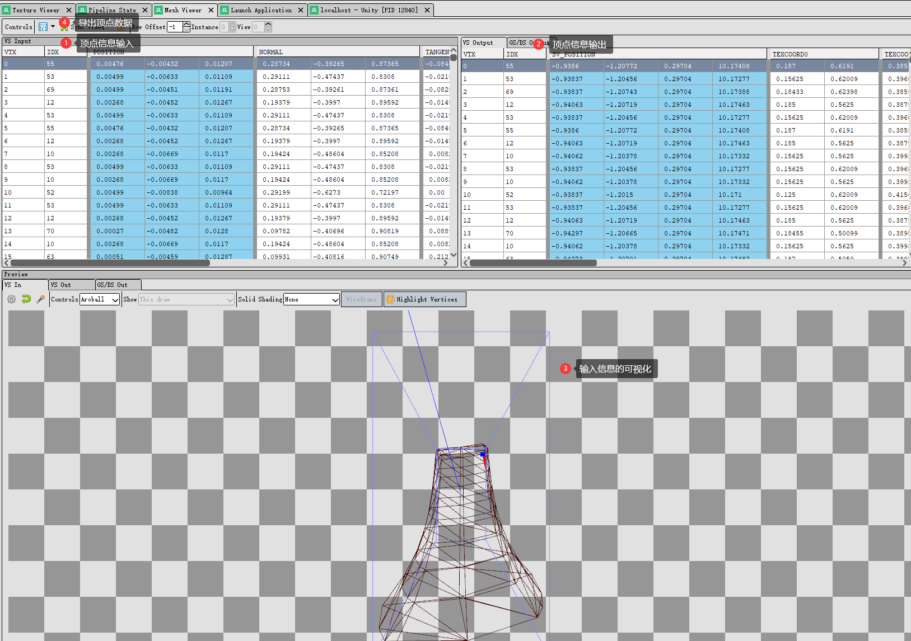
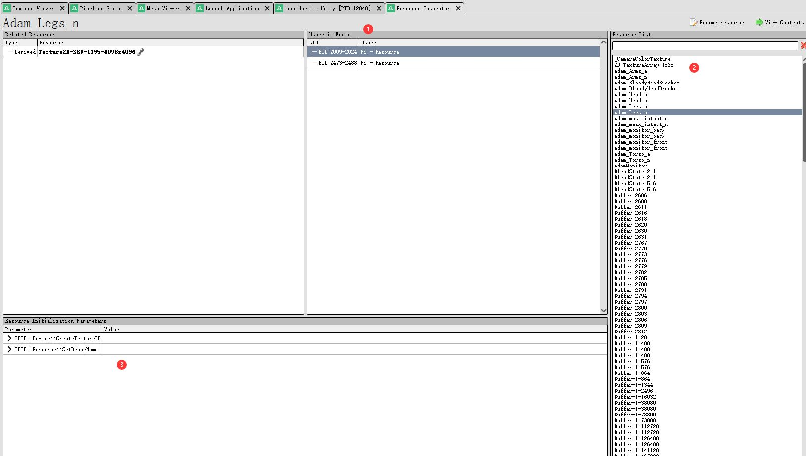

RenderDoc 学习
简介
RenderDoc是一种图形调试器，目前可用于 Windows、Linux、Android、Stadia 和 Nintendo Switch TM 上的 Vulkan、D3D11、D3D12、OpenGL 和 OpenGL ES 开发。
目的
优化GPU
逆向游戏
调试Shader
下载地址
安装使用说明
点击下载好的RenderDoc_版本号.msi，根据需求进行安装设置。
Unity加载设置，点击视窗右上角的设置按钮，然后点击”Load RenderDoc”,如下图所示：

点击加载出来UI按钮进行抓帧使用，如上图所示：
相关参考资料
使用说明
注意：由于目前本人主要是开发PC游戏，所以手机端的相关使用暂时跳过（2021年20月3日）
电脑端截帧使用方法

在引擎中点击UI，跳出RenderDoc主界面，点击上图按钮(Capture Frame(s) Immediately))进行截帧，截取到的帧会保存在“Captures collected”。
双击打开对应的文件，进行相关的渲染分析。
窗口介绍
Event Browser

Event Browser是单步执行框架并浏览其中发生的事件的主要方法。第一列EID(Event ID)按时间顺序指示这是帧中的哪个事件或API调用。
TimeLine

查看这一帧的时间轴
Texture Viewer

主要用来查看纹理显示，我们可以用它来查看在Event Browaser中选中的DrawCall或者Pass的输入和输出纹理。2中是输入纹理， 2中是输出纹理，在其中选中一个纹理，可以在 1中放大显示。
Pipline Sate

主要用来查看渲染管线过程
Mesh Viewer

主要是用来查看VertexShader中输入输出的顶点数据
Resource Inspector

查看这一帧中所有的资源
1 是所有引用到这一个资源的的EID,点击可以跳转到Event Brower中选中。
2 是所有的资源列表
3 是初始化这个资源调用的一些OpenGL API
未完待续
关于本文
本文作者 Master Gong Sheng, 许可由 CC BY-NC 4.0.